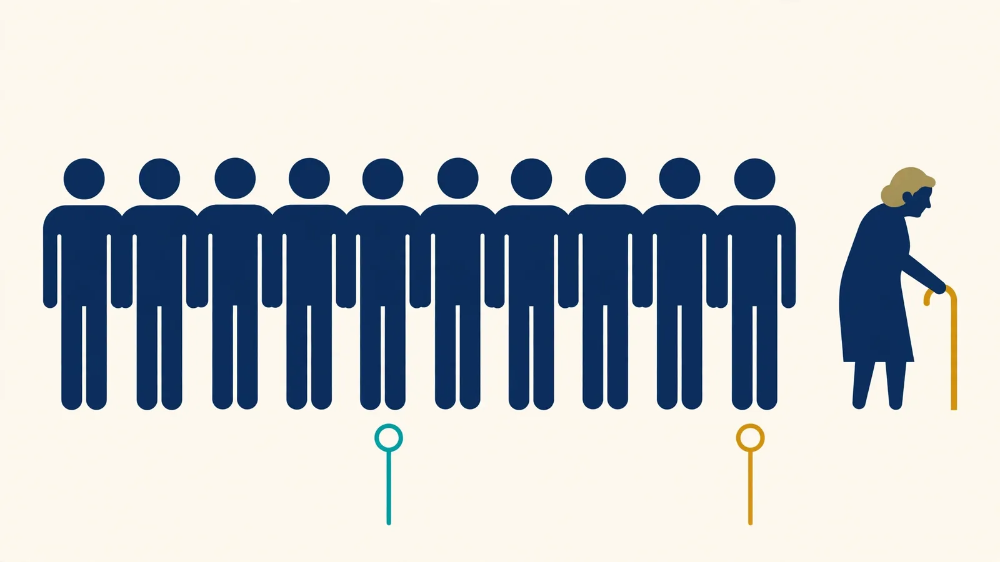

1. What Is an Average Age Calculator?
An average age calculator finds the arithmetic mean of a group of ages: it adds every valid age together and divides the total by the number of people included. One number then summarises the whole group — the average age of a class, a team, a family, or a research sample.
This calculator accepts the group in two ways. You can type the ages directly, or enter dates of birth and let the tool work out each person's exact age on a shared reference date before averaging. Alongside the mean it reports the number of valid entries, the youngest and oldest ages, the age range, and — optionally — the median age for comparison.
The mean is a summary, not a description of any one person. A group of five can average 34 years without anyone in it actually being 34 — and that is normal. What the average gives you is a single, honest balance point for the group as entered.
2. How to Use This Calculator
- Choose how to enter the group. Use Enter ages if you already know everyone's age, or Dates of birth if you have a roster, class list, or family tree with birth dates.
- Add one entry per person. Type each age (or date of birth). Use + Add another age for larger groups, and Remove to delete a row. Leave rows blank if you added too many — blanks are ignored.
- In date-of-birth mode, check the reference date. It defaults to today. Every age is calculated as of that one date, so the average is consistent.
- Decide whether you want the median. The median is ticked by default and appears alongside the mean — the comparison is most useful when a group spans a wide age range.
- Select Calculate Average Age. The result panel shows the mean to two decimal places, how many valid entries were used, the youngest and oldest ages, and the range. The sorted table below the calculator updates with the same numbers.
Invalid entries are never silently included: a negative age, an age over 150, or a date of birth after the reference date produces a message naming the row to fix.
3. How to Calculate Average Age
The average age of a group is calculated with the arithmetic mean. Add the ages of all valid people in the group, then divide the total by the number of included people:
The average age formula
Average Age = (a₁ + a₂ + … + aₙ) ÷ n = Σaᵢ ÷ n
Where aᵢ is the age of each person, n is the number of valid entries, and Σaᵢ is the sum of all included ages.
Step-by-step calculation
- Collect the age of each person, all in the same unit (years).
- Check that each value is valid — no blanks counted as zero, no mixed units.
- Add all included ages together.
- Count the number of included entries.
- Divide the total age by the number of entries.
- Round the final result for display — this calculator shows two decimal places.
Worked example
Suppose a group contains five people aged 18, 24, 31, 42, and 55:
| Person | Age |
|---|---|
| Person 1 | 18 |
| Person 2 | 24 |
| Person 3 | 31 |
| Person 4 | 42 |
| Person 5 | 55 |
| Total | 170 |
The sum of the ages is 170 years and there are five people, so Average Age = 170 ÷ 5 = 34 years. The youngest is 18, the oldest is 55, the age range is 55 − 18 = 37 years, and the median — the middle value of 18, 24, 31, 42, 55 — is 31 years. These are exactly the values pre-loaded in the calculator above, so you can verify them yourself.
4. Average Age from Dates of Birth
When you know birth dates rather than ages — a class list, a team roster, a family group — enter them in Dates of Birth mode. The calculator determines each person's age as of one common reference date and then averages those ages. Never average birth years instead: birth years ignore where birthdays fall in the year and produce the wrong average for the chosen date.
How date-of-birth mode works
- Enter each date of birth.
- Select the reference date (it defaults to today).
- The calculator works out each person's exact age on that date.
- It averages the exact ages and shows the mean, with the reference date named in the result.
How exact ages are calculated
Each age is completed years plus the fraction of the current year of age: the days since the person's last birthday divided by the days until their next birthday. A person halfway between their 36th and 37th birthdays is therefore 36.50, not 36. A February 29 birthday is observed on February 28 in non-leap years, matching the convention used by this site's other age calculators. The calculator never averages completed whole-year ages alone, because rounding every age down first would bias the mean downward by up to half a year per person.
Worked example
Three people, evaluated on the same reference date — 22 October 2026:
| Date of birth | Exact age on 22 Oct 2026 |
|---|---|
| 15 March 1990 | 36.61 years |
| 2 July 2001 | 25.31 years |
| 28 November 1985 | 40.90 years |
| Total | 102.81 years |
Average age = 102.81 ÷ 3 = 34.27 years. The youngest is 25.31, the oldest 40.90, and the range is 15.59 years. These dates are pre-loaded in date-of-birth mode — set the reference date to 22 October 2026 to reproduce them exactly.
5. Average Age vs. Median Age
The mean and the median are both measures of the centre of a dataset, but they can tell different stories about the same group.
What is average age?
In everyday use, average age means the arithmetic mean: the sum of all ages divided by the number of people. Because every value counts, unusually high or low ages move the result.
What is median age?
The median is the middle value after all ages are sorted. With an odd number of entries it is the middle value itself; with an even number it is the mean of the two middle values. Position, not size, decides it — so one extreme age cannot move it much.
Why the distinction matters
Consider a group aged 20, 22, 23, 24, and 71. The mean is (20 + 22 + 23 + 24 + 71) ÷ 5 = 160 ÷ 5 = 32 years. The median is 23 years. The 71-year-old pulls the mean up by nine years, while the median still describes the typical member. Both numbers are correct — they answer different questions — which is why this calculator can show them together.
| Measure | How it is calculated | Best used for |
|---|---|---|
| Mean age | Sum of ages ÷ number of entries | Summarising all values in one figure |
| Median age | Middle value after sorting | The typical member when values are uneven |
| Minimum age | Smallest included value | Identifying the youngest member |
| Maximum age | Largest included value | Identifying the oldest member |
| Age range | Maximum − minimum | Understanding the spread of the group |

6. Why Can the Average Age Be Misleading?
The mean is useful, but it does not describe every characteristic of a group. Four things to keep in mind when you read one:
Averages can hide age differences
Two groups can share the same mean with completely different make-ups. Ages 30, 30, 30, 30 and ages 5, 25, 40, 50 both average 30 — one group is uniform, the other spans childhood to middle age. The youngest, oldest, and range statistics exist to reveal exactly this difference.
Outliers can change the result
A small number of unusually high or low values shifts the mean, as the 71-year-old did in the example above. Checking the median alongside the mean shows whether the "average" member is typical or an artefact of one extreme entry.
The number of entries matters
An average from three people and an average from three hundred are both arithmetically correct, but they support different conclusions. The small one describes only those three people; it says little about any larger group they came from.
Inconsistent data creates misleading averages
If some ages are entered in months and others in years, the mean is wrong unless everything is converted to one unit. With dates of birth, every age must be measured on the same reference date — this calculator enforces both rules, and blank entries are reported as skipped rather than quietly treated as zero.
7. Practical Uses of an Average Age Calculator
Family age calculations
Families use the mean age of siblings, cousins, or several generations as a simple summary — for a reunion, a family record, or curiosity. It describes the group, not the "typical" member; the median helps there.
Classroom and student groups
Teachers and researchers summarise the ages in a class or study group, often alongside the age range, since a class with a wide spread may need different planning than a uniform one.
Workplace and team demographics
Organisations use group-level age statistics for descriptive reporting and workforce planning, working from authorised, aggregated data — never to draw conclusions about individual employees from a group figure.
Sports and activity groups
Coaches and organisers summarise squad ages to describe a team's composition. Category eligibility still depends on each athlete's exact age on the governing body's cut-off date, which the Age on Date Calculator checks individually.
Surveys and demographic research
Researchers report mean age as one summary of a sample, together with the sample size and spread. A mean alone does not establish that a sample represents a wider population.
Family events and reunions
A group average is an interesting descriptive statistic for a gathering — most meaningful when every age is measured consistently and the group is clearly defined.
8. How Many People Do You Need to Calculate an Average Age?
Mathematically, just one: with a single valid entry, the mean equals that entry. With two or more, the mean is their arithmetic average. There is no minimum group size for the calculation itself.
Interpreting the result is different. The mean of five volunteers accurately summarises those five entries, but it does not necessarily represent the mean age of their school, company, city, or country. When you report an average age, include the number of observations — the result panel always shows it — and, for research or reporting, how the group was selected.
Should all ages be weighted equally?
In the standard calculation, yes: each included person counts once. Survey datasets sometimes need statistical weights, but that is a different, explicitly defined method — this calculator performs the standard unweighted mean and says so.
9. Rounding and Accuracy
Should average age be a whole number?
Not necessarily. A group can have a mean age of 28.60 years even when every individual age is a whole number. The fraction is mathematically real — it is the group's balance point, not a person's age.
How many decimal places are shown?
Two. The mean and median are displayed to two decimal places; the underlying calculation keeps full precision and rounds only the final displayed value. Rounding each person's age before averaging can shift the result, so this tool never does that — in date-of-birth mode it averages exact fractional ages, not completed years.
What counts as a valid entry?
In ages mode: a number from 0 to 150, decimals allowed. In date-of-birth mode: a real calendar date on or before the reference date, giving an age of at most 150. Anything else is flagged by row, and blank rows are ignored and counted in the result line so you always know how many values the average is based on.
10. Average Age Formula for a Spreadsheet
The same arithmetic works in Excel or Google Sheets. If the ages are stored in cells A2 through A11:
=AVERAGE(A2:A11)
AVERAGE takes the arithmetic mean of the numerical entries in the range and ignores blank cells. Validate the data first — a stray text value or an age typed in months will quietly distort the result.
Do not average dates of birth directly
Applying AVERAGE to a column of birth dates averages the date serial numbers — it returns a date, not an age. First calculate each person's age as of one shared reference date in a helper column (using the same completed-years-plus-fraction convention described in Section 4), then average those ages. Averaging birth years alone is also wrong: it ignores where birthdays fall within the year.
12. Frequently Asked Questions
What is an average age calculator?
An average age calculator finds the arithmetic mean of a group of ages. It adds all the valid ages together and divides the total by the number of people included, then reports supporting statistics such as the youngest and oldest ages and the age range.
How do I calculate the average age of a group?
Add all the ages together and divide the total by the number of people included. For example, the mean of 20, 30, and 40 is (20 + 30 + 40) ÷ 3 = 30 years. This calculator does the same arithmetic for any group size, from two entries to a full class or team list.
Can I calculate average age from dates of birth?
Yes. Switch to the Dates of Birth mode, enter each date of birth, and set one shared reference date. The calculator works out each person's exact age on that date — completed years plus the fraction of the current year — and then averages those ages. Every age is measured on the same date, so the result is consistent.
What is the formula for average age?
Average age = the sum of all included ages divided by the number of valid entries: Mean = Σaᵢ ÷ n, where aᵢ is each person's age and n is the number of people. For ages 18, 24, 31, 42, and 55, that is 170 ÷ 5 = 34 years.
Can the average age include decimal values?
Yes. The mean can be a decimal even when every individual age is a whole number — a group of 20, 30, and 41 averages 30.33 years. The decimal is the mathematical average of the group; it does not have to match any one person's age. This calculator shows the mean to two decimal places.
What is the difference between average age and median age?
Average age usually means the arithmetic mean: every value counts, so unusually high or low ages pull the result toward them. Median age is the middle value after sorting, so it resists outliers. For ages 20, 22, 23, 24, and 71, the mean is 32 years but the median is 23 years. Tick “Also show median age” to see both side by side.
Can I calculate the average age of two people?
Yes. Add the two ages and divide by two. The mean of 24 and 36 is (24 + 36) ÷ 2 = 30 years. The calculator accepts as few as one entry — with a single entry, the average is simply that age.
Does the calculator ignore blank entries?
Yes. Blank rows are ignored rather than treated as zero, and the result line shows exactly how many valid entries were used and how many blanks were skipped. Invalid values — text, negative ages, or ages over 150 — are flagged with a message instead of being silently included.
Can I use ages in months?
Convert months to years first, so every entry uses the same unit: divide months by 12 (18 months = 1.5 years). Decimal ages are accepted, so 1.5 works directly. Or use Dates of Birth mode, which handles the calendar arithmetic for you. Never mix months and years in the same calculation.
Why is my average age different from the median?
Because the two statistics measure different things. The mean uses every value and is influenced by unusually high or low ages; the median depends only on the middle position of the sorted group. When a group has one much older or younger member, the mean moves toward them while the median stays near the typical member.
Can I use this calculator for a class or team?
Yes, for descriptive group statistics — average class age, squad age profiles, family summaries, and similar. Make sure every entry uses the same convention and, in date-of-birth mode, the same reference date. A group average describes the group you entered; it does not automatically represent a wider population, and eligibility rules (such as age cut-offs) must still be checked separately.
Is the average age calculator free?
Yes. The Average Age Calculator is free on Age Calculator Lab, with no sign-up. The calculation runs entirely in your browser — the ages and dates you enter are not sent to or stored on a server.
13. Calculator Methodology & Data Integrity
This calculator performs the standard arithmetic mean over the entries you provide: mean = Σaᵢ ÷ n, with the median, minimum, maximum, and range computed from the same included values. In date-of-birth mode, each age is an exact fractional age at your chosen reference date — completed years plus days since the last birthday divided by the days in the current year of age, with February 29 birthdays observed on February 28 in non-leap years. Blank entries are excluded and counted openly; invalid entries are flagged, never silently corrected or treated as zero. All computation happens client-side in your browser — the ages and dates you enter are not transmitted to or stored on any server.
Disclaimer: Results are descriptive statistics for the group as entered. They do not determine eligibility for school, sport, employment, benefits, or any regulated purpose — for those decisions, use each person's exact age on the governing cut-off date and confirm with the responsible authority.